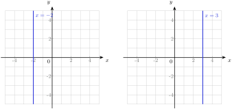
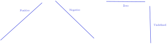
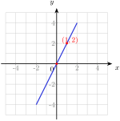
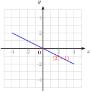
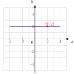
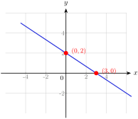
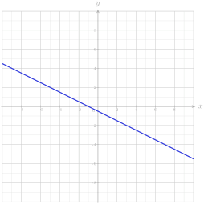
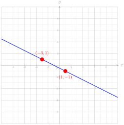
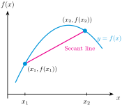
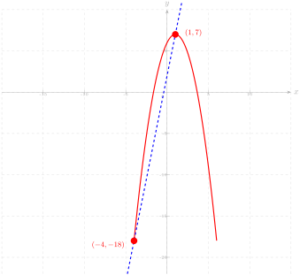

Definition 71. Linear Equation.
An equation that can be written as \(Ax + By = C\text{,}\) where \(A\text{,}\) \(B\text{,}\) \(C\) are real numbers and \(A\) and \(B\) are not both \(0\text{.}\)









